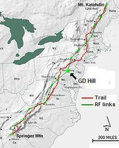

2017 Success! 15 July with Andy ws excellent weather and lighter batteries. Used less than 6AH for the entire event. We exchanged SSTV pictures with Maryland Mountains (After a hike back down to the car and back up with the SSTV we forgot in the car)... Also found a possible permanent replacement on a hill 5 miles away that has a permanent ham shack and antennas. Will sure be easier than climbing GD HILL, but not as much fun!
2016 80% success! 16 July. Bob had blowout on way to GD Hill, but Gordon rescued him and we arrived with Rorie already on site and setting up. Links from NC to MA. We worked VHF and then Rorie switched to 9600 baud with equal success. 9600 baud plan along the entire appalachaian chain. See 2016 report.
2015 Success! On 18 July 2015 all stations were manned, but a first-time operator at Sam's point was not yet packet capable so he was doign voice relay. This was sufficient to get the "word" end to end, but a nice challenge then for next year (2016). Sam's point is a place that has to be hiked up several hundred feet and significant distance from the nearest parking lot. So making it small and lightweight is a challenge.
2014 Success! This year we took a minimalist approach. First we took only one battery (fully tested to assure plenty of capacity) and one digipeater radio (D710) and one APRS HT (D72), some water and a candy bar. We began the half mile hike to the hilltop at 10:15 and then the tower-climb to be on-line by about 1115. Soon we saw packets from Camelback to the north (only). We had voice contact with MDMTNS and after helping talk through configuring his band B for packet (his band A had the common 10 dB deafness experienced in some D710's), we began to see Southern stations about 1149. At 1151 we saw Springer. About 1230 Sam's point came up and we had full connectivity from the North and got our first Katahdin packet at 1242.
Lynn, the designated shack potato, confirmed Sucess from all stations and we were faced with the prospect of "... OK, now what do we do?" Since many dozens of people were involved, wedecided we may as well shut down early and let people go home. GDHILL sent out a message saying "Shut down from ends in turn after confirm with other stations." But it seemed no one wanted to be the first to break the chain (though Tim had already started down from Katahdin (a 6 hour trek). FInally we sent out another bulletin "Shut down at 2 PM." With still a halfhour to go, many stations started sending messages and post-action files showed the network was ablaze with message retries and ACKS, probably making distance communications dfficult (though fun). We shut down prompty at 2 PM and got back down the tower and hill to head home by 3 PM.
Photos for 2014 to follow later...
2013 Planning: Bob, WB4APR and Rory Schaffer NJ3U are leading the effort this year. See the summary spread sheet.
2012 Planning: Bob and Rorie manned GD Hill for the combined GOlden Packet and Operation ON-Target experiment. But Bob lost most of his kitchen pass and had to do set-up early and then leave early.
2011 Success: We probably get the "weakest link" this year. WB4APR Bob and KC2UML Rorie along with the mule-pack AJ Bruninga, WA4APR assaulted GD Hill again in 2011. But as we got all thgear to the top of the hill, we were joined by Murphy, N0CALL. As an invisible uninvited guest, he insisted on climbing the tower with us. The rest is history. See all of his contributions for 2011.
Despite his assistance, we immediately heard all the way from SPRINGER mountain in Georgia and eventually heard from Mount Washington in NH! Problem is, we did not realize we were not digipeating until 1450! Fixed that, but then there were only a few beacons before ending time.
2010 SUCCESS! Bob and Rory did it again this year. See the 2010 GD Hill Summary Report and the 2009 Report.
See the Golden Packet plan. . This is one of the 15 hill-top sites from Georgia to Maine that we use on the third Sunday in July for the annual GOlden Packet Event which attempts to relay text messages using hand-held radios the 2000 mile length of the Appalachain trail and other long linear trails in the USA. This is a no impact Leave-No-Trace type of event of a few individuals at each site. . Other hikers equipped with APRS ham radios are welcome to participate during the time slot for hikers.
Governor Dick Hill is an isolated hill just to the east of Mt Gretna, PA that rises above surrounding terrain in the relatively flat area south east of Harrisburg. It is ideally located between the Maryland Mountains and Eastern PA. It can get over the ridges northeast to Camelback Mountain in Big Pocono State Park with a little help from knife-edge refraction. Although it has tall trees, it is a public park site with a public climb-up lookout tower! The Radio team has to hike up 1/2 mile on a trail to the tower and carry the equipment in back-packs.
ALTITUDE: . . . . . . . . . . . 1150 feet
POSITION:. . . . . . . . . . . . 4014.77N / 7627.33W
LINK NORTHEAST:. . . . Camelback (Big Pocono SP). has 146.865 T100.
See RF data
. . . . . . . . . . . . . . . . . . . . . . . And
Highpoint, NJ
as a possible 1 hop bypass to MT Greylock!
LINK SOUTHWEST:. . . . MD Mountains (has WN3R-10 on 145.77 MHz).
See RF data
VOICE REPEATER:. . . . .
147.315+ T082
ECHOLINK NODE: . . . . W3NOD-R 446.925 T082 #146925 (Laporte PA)
INTERFERRENCE: . . . . None. No RF on site
TEAM LEADER:. . . . . . . Bob Bruninga, WB4APR (2010,2009)
. . . . . . . . . . . . . . . . . . . . . . Rory Shaffer, KC2UML - schaffer250 * comcast.net (2010 & 2009)
. . . . . . . . . . . . . . . . . . . . . . Stephen M. Shearer wb3lgc * verizon.net (?)
. . . . . . . . . . . . . . . . . . . . . . AJ, WA4APR, and Bethanne, WE4APR (2009)

COMMENTS 2010: . We had solid comms south through MD Mountains to White Rock Cliffs using HOP7-7 paths. But WHTRCK was not digipeating onward, so we used their actual call WHTRCK-6 and were able to link down to AO mountian near Roanoke and back. We never heard anything to the north.
GD Hill is a lot of fun. Clint told us about this site and its great observation platform with its steel-bar cage at the top (dimensons) does not pose any problem for a vertical 2m antenna on a short 12 foot mast stuck up through the bars see photo). The operating position is convenient if you bring your own table and chair as shown to the right (2009). In 2010, we left the furniture at home and sat on a cushion! (9600antenna).
Power Planning 2010: This year we decided to schlep sufficient batteries and backups up the hill. We brought two 20 AH gel-cells and three 4 AH Nicad packs. But with the rain, we never even hooked up the laptop and so ran the entire event on only one battery and on charging it aftert the event, we had only used a total of 2 AH or less! Next year we will carry less LEAD up the mountain! (and no laptop!)
Full Power in 2009! The potential for poor weather suggested a backup plan B for our original plan A solar power. In the google earth view above you can see that it is over a half mile from the nearest parking space. Our plan B was to string a 3200' run of #20 wire up from my car and use a single-wire-earth-return (SWER) technique to deliver about 100 Watts to the laptops and battery charger.
The bars are about 7.5 feet tall and have a ring about 4 feet above the standing floor. The GD Hill web page provides lots of detail including reference to an old radar site (approximately where the white "north" arrow is on the image above. It evens has an interactive 360 view video!
The first site visit was on 26 April 2009 by Paul Shultz, K2PCS, the son of Roger Shultz who was at the Camelback end of the link. The ladders are vertical, 7 feet between landings with a "back board" for easy climbing but preventing a backpack. But just handing bags up each flight is easy. See ladder photos vertical view, and one landing to another.
RF TEST REPORTS: Paul reported that Roger on Camelback running 50 watts and a beam had noticable "static" but he could hear him on a 2m HT quite clearly. On a 1-5 scale of 5 being clearest, he was probably 3.5-4. This tells me that we will definately need a good 3 dB at least vertical antenna to get above the iron cage and between the bars. Bob followed up with another test on 20 June and made detailed link measurements. It showed rock solid links to Maryland but that a beam antenna was needed at Camelback. See WB4APR's test report. UHF takes full power to omni's.
See Trail Entrances radar road and old rail bed. The hike is about 1/2 mile or 3/4 mile depending on the trail. Parking is available on the side of the roads near these trail heads.
Since both of the RF paths to the SW and NE are very long shots with grazing ground clearance, a good antenna at least a wavelength above the iron cage is a must. Fortunately, the Hill is a nice curvature at the top giving ample height above average terrain in most directions. (see view). The image below shows the path from the Maryland Mountains to GD Hill, followed by the RF path analysis.


DETAIL LINK ANALYSIS BY KX4O: Be sure to follow the two RF links at the
top of this page to see the excellent and very detailed RF link analysis
performed for every link in this project by KX4O John Huggins.
Each RF link shows the terrain map
elevations, the AT trail in yellow, the RF path loss itself
including fresnel zones and finally a
statistical plot of the probabilities of link availability. We will very
much be looking at the results of this project compared to the pre-event
analysis and predictions. All of KX4O's links are shown on his
AT Links Page.
See also N1NCI's RF analysisMD-to-GDhill and
GDhill-to-Camelback
There is clearly an excellent RF path from the Maryland Mountains. The RF analysis used Salamander Rock which is not the highest, but is in the vicinity of easily accessible sites. The analysis towards Camelback shows the challenge of crossing the Pennsylvania hills onward to the northeast to Camelback Mountain in Big Poconos State Park.
This path has two significant ridges to overcome but on a 4/3rds RF Earth projection, the clearance is good. The path loss means we should be able to do the link on LOW POWER. The sensitivity of a D700 or D7 is around -117 dBm for good packets. SO this and a 10W medium power was used for analyzing all links.


EQUIPMENT AND POWER: A typical AT Golden Packet Digipeater consists of a D710, a mast as required to clear the trees, and a power source. The mimimum event is 4 hours long, but the optional phases can last up to a total of 6 hours, so ample AMP-Hr capacity should be considered. The D710 draws about .7 amps on receive, and about say 4.5 amps on TX (medium power 10W). Under normal operation, the duty cycle of an APRS digipeater is typically 20% so the average power demand of the AT digipeater will be about .2 * 4.5A +.7A or about 1.6 Amps per hour. You can either carry a 10 Amp Hour battery to the mountain top, or if the day is sunny, a 4 Amp-Hr battery and a 1 amp solar panel as shown. Or use the single wire earth return system shown below if you can carry enough wire to get back to the car.
My setup for 2019 is shown here. Only one NiCd pack is needed if I have the solar or the Lithium backup pack. I use 3 series dropign diodes to get the 16 volts from the Lithium cells down to 14 volts for the NiCd's. Notice how I cna mix and match any power source becaue all 12vc devices and batteries have dual Anderson power pole connectors for daisy-chaining.

SWER REPORT: Our plan was to carry the wire spool to the top of the tower and then pull wire off of it down hill 1/2 mile to the car. But the drag through the woods was too great. Even with one person half way down the hill, the pullling force was too great and broke the wire. Finally took 3 people and nearly 1.5 hours to string the wire. (Next year, we will simply unspool from the bottom up as we go). Once connected, the laptop power supply simply cycled on and off.
This cycling was due to the nature of Laptops that when connected to external power, first do a peak current load test to measure the current capabilty of the power supply. It then uses that information to chose its operating and charging profile. Problem is, with the very high impedance of the SWER system, this quick peak current causes the voltage to drop and the laptop to dismiss the power supply as a viable current source. So it cycles and tries again, and ends up in an infinite loop. We solved this by momemtarily swamping the oscillations by paralleling a 12v battery and/or solar panels to let the laptop at least complete its boot.
From then on, we had reliable power and the laptop ran for the remainder of the event. Retrieval of the 3200' of wire in the rain went quickly since we cut it in the middle and were able to then easily re-spool each piece from the down-hill end.
See ya next year!
Bob, WB4APR
See my other GENERAL page on APRS applications and Ideas on the AT
Return to the APRS HOMEPAGE or SiteMap.
{kind=link}
{kind=link}
{kind=link}
{kind=link}
{kind=link}
{kind=link}
{kind=link}
{kind=link}
{kind=link}
{kind=link}
{kind=link}
{kind=link}